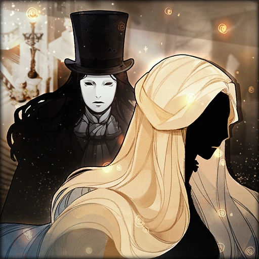
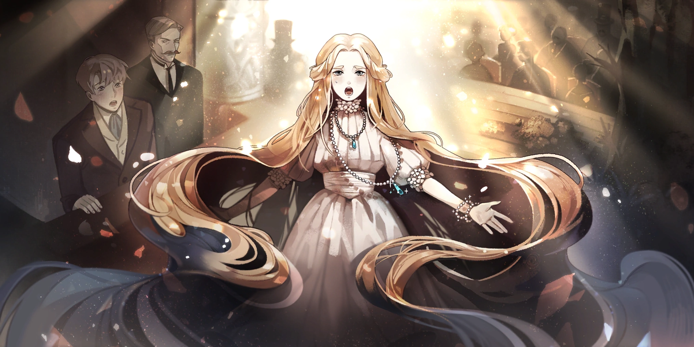
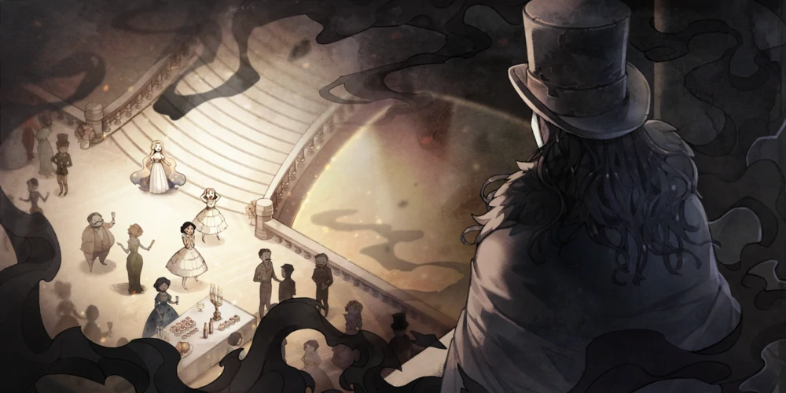
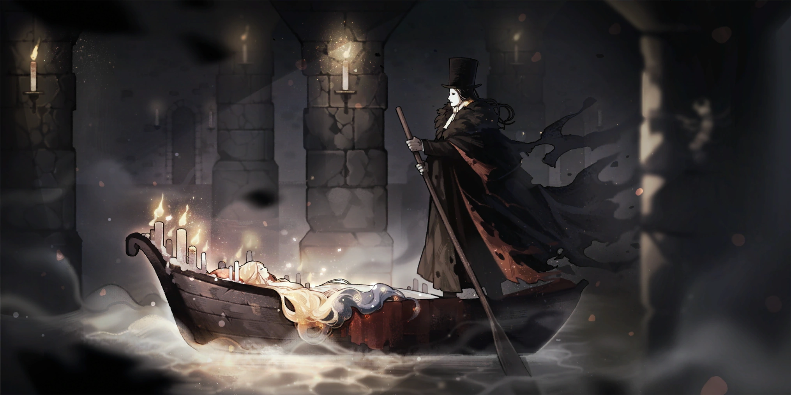
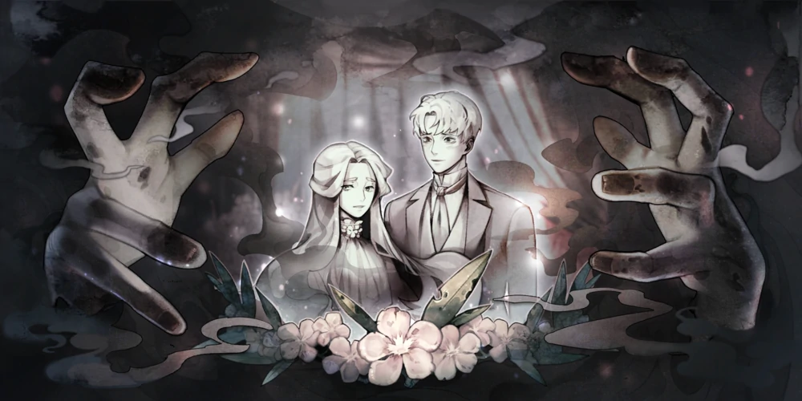

MazM:The Phantom of Opera
Призрак Оперы — третий проект студии MazM

Mобильная игра, разработанная корейской студией MazM. Она была выпущена 30 августа 2018 года в магазинах App Store и Google Play. В России и мире стала доступна для скачивания 4 сентября 2019 года. Игра также вышла в Steam и на Nintendo Switch 25 марта 2021 года.

"Новая Маргарита"
◆Третий проект студии MazM◆
Наш третий проект, MazM: The Phantom of the Opera — интерпретация великолепного произведения классической литературы. В основе сюжета этой приключенческой игры лежит мистический роман Гастона Леру «Призрак Оперы», написанный им в 1910 году. Находите улики, наслаждайтесь историей, решайте проблемы
Мистическая история любви под сводами величественного оперного театра! История любви настолько захватывающая и напряженная, что сводит с ума целый тетр! О, какие жуткие тайны будут раскрыты. Сыграйте в игру, чтобы пережить таинственные истории оперного театра!

"Прощальный вечер"
Игра, в отличие от предыдущей — «Jekyll and Hyde», позволяет запустить любой эпизод по желанию после его прохождения, а не после прохождения игры до конца. Большую часть геймплея составляют разговоры с персонажами и изредка выбор ответа. Портреты персонажей способны двигаться (прыгать и трястись), в отличие от прошлой игры. Также в ней присутствуют мини-игры, которые необходимо решить или удачно завершить для дальнейшего прохождения. Некоторые из них не особо отличаются от тех, которые были представлены в предыдущей игре.

"Погружение вниз"
Игра включает в себя около четырнадцати локаций, которые становятся доступными по мере продвижения в игре. Передвижение из одной локации в другую производится через порталы. На данный момент существуют одиннадцать играбельных персонажей, доступных для управления в разных эпизодах. Каждый из персонажей имеет свою особенную скорость передвижения: например, Жамм передвигается практически бегом, в то время как Фирмен Ришар ходит очень медленно.

"Тайная помолвка"
Вся игра делится на пять глав, в каждой из которой доступны несколько видов эпизодов: обычные сюжетные и экстра эпизоды. Последние дают возможность раскрыть некоторые детали сюжета, недоступные в обычных эпизодах. Также доступна шкала прогресса прохождения эпизода. Она указывает, был ли он пройден полностью.